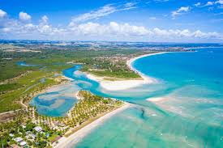

Descobrindo as Praias do Nordeste
Publicado em:
O Nordeste brasileiro é um verdadeiro paraíso na Terra. Com águas cristalinas e areias brancas, lugares como Porto de Galinhas e Maragogi encantam turistas do mundo inteiro pela sua beleza natural e hospitalidade.

Além das praias, a gastronomia local é um capítulo à parte. Experimentar o acarajé na Bahia ou o bolo de rolo em Pernambuco é uma experiência obrigatória para qualquer viajante que queira mergulhar na cultura local.